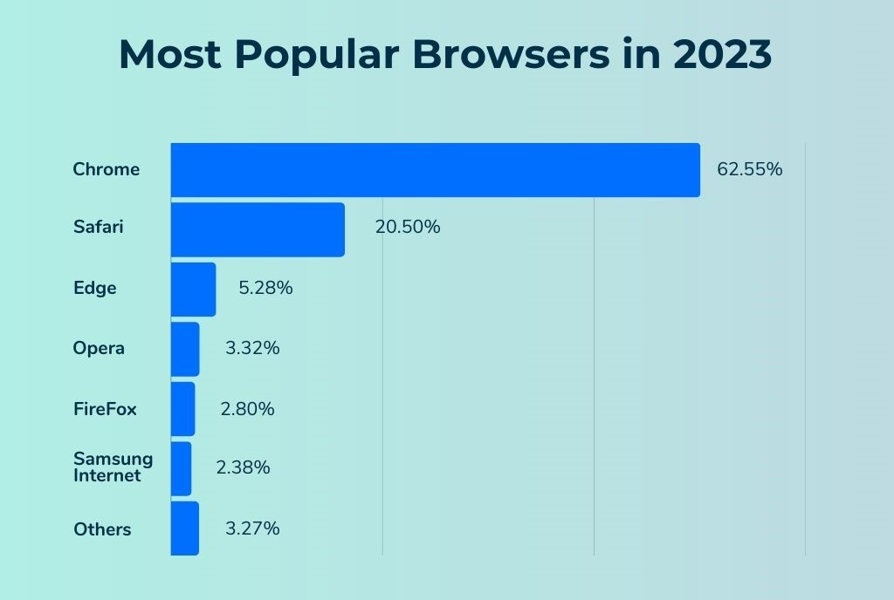

The Visionary Tim Berners-Lee
October 1, 2023 by Garvin

Sir Timothy John Berners-Lee, born on June 8, 1955, in London, England, is a computer scientist and the mind behind one of the most transformative inventions of the 20th century—the World Wide Web. Raised in a family of mathematicians and scientists, Berners-Lee displayed an early aptitude for technology.
After completing his degree in Physics at The Queen's College, Oxford, Tim Berners-Lee worked as an independent contractor at CERN, the European Particle Physics Laboratory in Switzerland. It was during his time at CERN in 1989 that he proposed the idea of a global hypertext system, which laid the foundation for the World Wide Web. His proposal combined hypertext, the internet, and a set of protocols to create a system that allowed documents to be linked and accessed over the internet.
On August 6, 1991, Berners-Lee released the world's first website and web browser. This marked the beginning of a revolutionary era in communication and information sharing. Tim Berners-Lee's commitment to openness and collaboration led to the creation of the World Wide Web Consortium (W3C) in 1994, where he continued to develop and standardize web technologies.
Recognizing his groundbreaking contributions, Tim Berners-Lee was knighted by Queen Elizabeth II in 2004. In 2017, he was awarded the A.M. Turing Award, often referred to as the "Nobel Prize of Computing," for inventing the World Wide Web, the first web browser, and the fundamental protocols and algorithms allowing the Web to scale.
Even today, Tim Berners-Lee remains an advocate for a free and open internet. In 2019, he launched the Contract for the Web, a global plan of action to make the web a better place for everyone. His legacy continues to shape the digital landscape, emphasizing the importance of accessibility, privacy, and the free exchange of information.
The Browser Wars: Navigating the Internet Battlefield
October 1, 2023 by Garvin
In the late 1990s and early 2000s, the tech world witnessed a fierce competition known as the Browser Wars. It was a time when web browsers battled for dominance, each striving to become the gateway for users to explore the vast expanses of the World Wide Web. This intense rivalry shaped the development of the internet and brought about significant innovations.
The Browser Wars were primarily fought between Microsoft's Internet Explorer and Netscape Navigator. Internet Explorer, bundled with the Windows operating system, gained a substantial market share, leading to concerns about Microsoft's monopolistic practices. Netscape Navigator, an early pioneer in web browsing, faced tough competition but maintained a devoted user base.

As the competition intensified, both browsers introduced new features and technologies to outdo each other. This led to rapid advancements in web technologies, including the introduction of JavaScript by Netscape, which revolutionized dynamic content on the web. Microsoft responded with its own innovations, further fueling the development of the internet ecosystem.
The turning point came with the release of Mozilla Firefox in 2004, offering users a faster and more secure alternative. Firefox's success signaled the end of the Browser Wars as it inspired a new era of browser development. Google Chrome entered the scene in 2008, quickly rising to prominence with its speed, simplicity, and strong support for web standards.
Today, the Browser Wars have evolved into a more collaborative landscape with browsers like Chrome, Firefox, Safari, and Microsoft Edge coexisting. The competition that once defined the internet's early days laid the groundwork for a more user-centric and innovative web experience. The lessons learned during the Browser Wars continue to influence the ongoing development of web browsers, ensuring that users can navigate the internet seamlessly and securely.